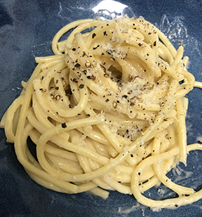

Cacio e Pepe

Description
Cacio e Pepe is one of Italy's oldest pasta dishes. The title of the dish literally translates to cheese and pepper. In it's most traditional form, you only need 4 ingredients to make this. They are spaghetti, cheese, pepper, and water. Today you can find many Italian restaurants around the world serving this dish with their own style such as the addition of butter or olive oil. I am not Italian, nor do I claim to know a lot about the history of Italian cuisine so maybe this is fake news.
Knowing what the dish should look like, and knowing that it only requires four ingredients, one would think that it would be quite simple to make. Yet getting the cheese to the consistnency you need takes a bit more precision than one might realize. So today I will share with you the way that I make it,using a tip that I learned a lot of restaurants use.
Ingredients
- Spaghetti 250g
- Pecorino Romano 200g
- Black Pepper
- Water 150g and more for boiling spaghetti
- Corn Starch 10g
- Olive Oil 15g
- Salt Optional
Steps
- Mix corn starch into water and mix together.
- Add mixture to pot and bring to just below simmer and continue to mix until slightly thickens / viscous texture.
- In separate bowl add pecorino Romano, pepper, olive oil. Once corn starch mixture is cooled a bit add to bowl and mix with fork then use blender. This is now ready and can use for dish / store for further use in fridge.
- Boil pasta.
- While pasta is boiling..Place a pan on low/ medium and add some pasta water to the pan followed by big spoons of the sauce. Mix together.
- Use tongs to grab pasta (no need to drain) directly from pan. Key is to take pasta out 1-2 minutes before you normally would cook to liking. Example if package says 10min for el dente take out 8-9 minutes. Place in pan that contains sauce.
- Continue to heat on low / medium and cook together so the sauce starts to stick on pasta.
- Remove all on to plate and can sprinkle ground black pepper and grated cheese on top.
- Consume and Enjoy